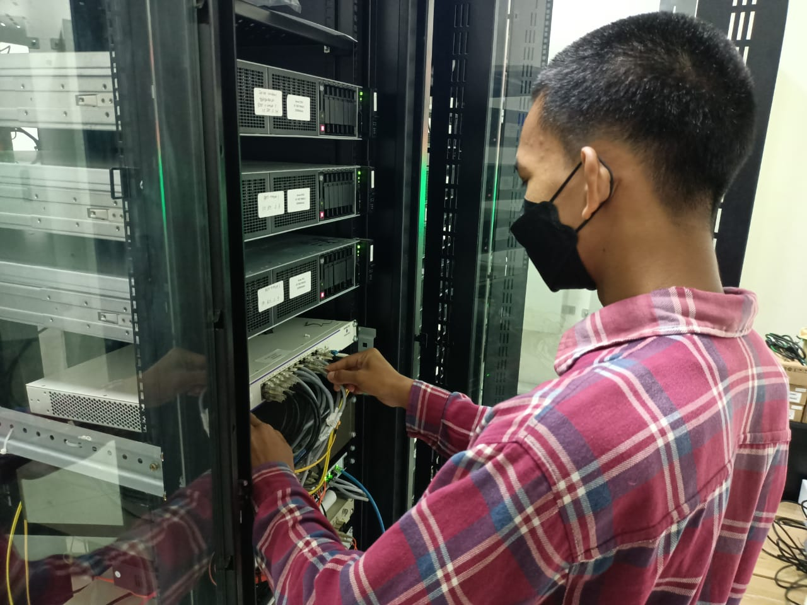
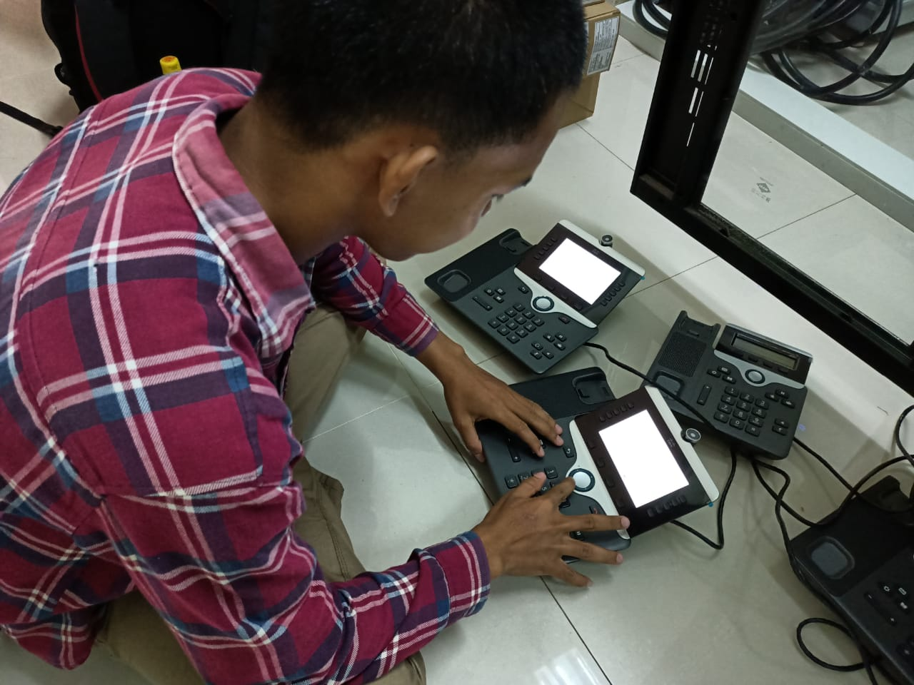
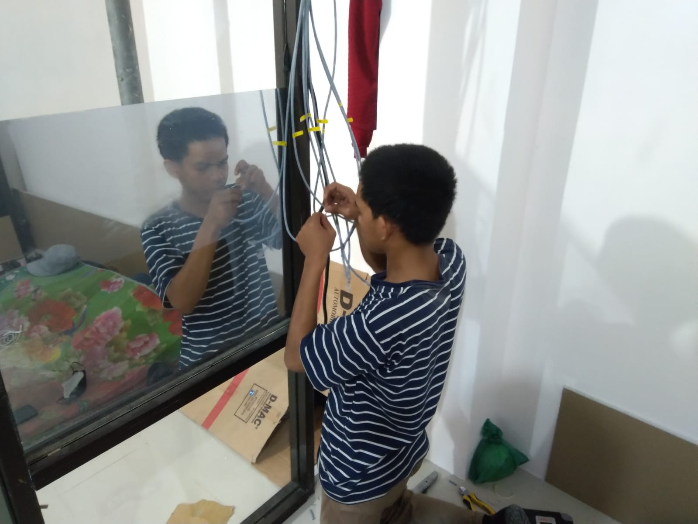
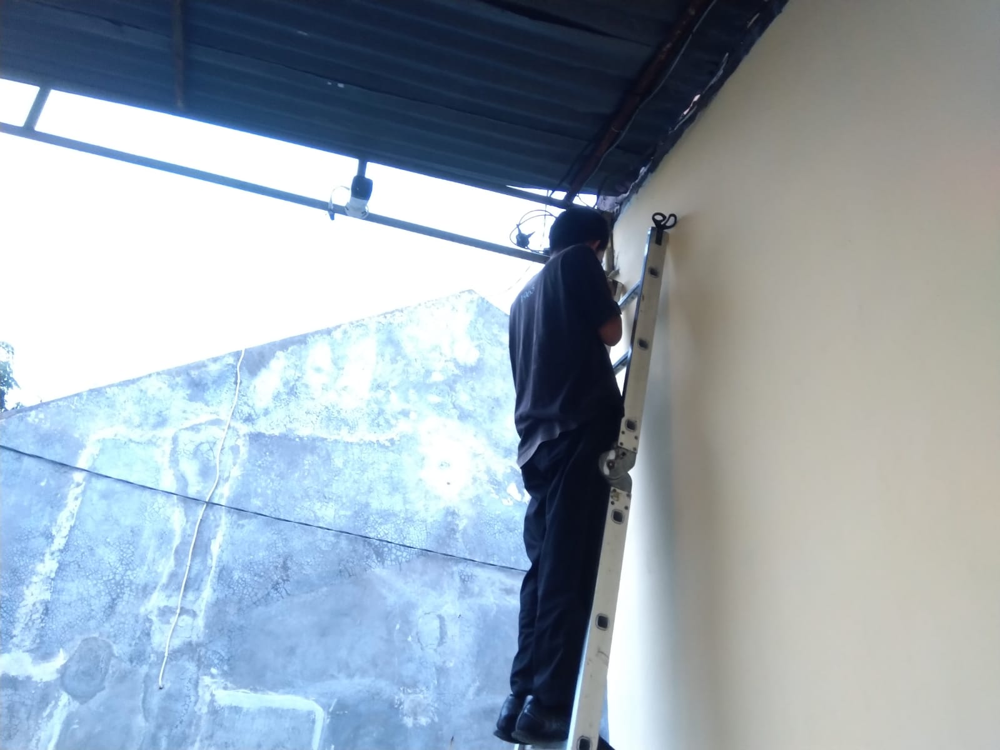
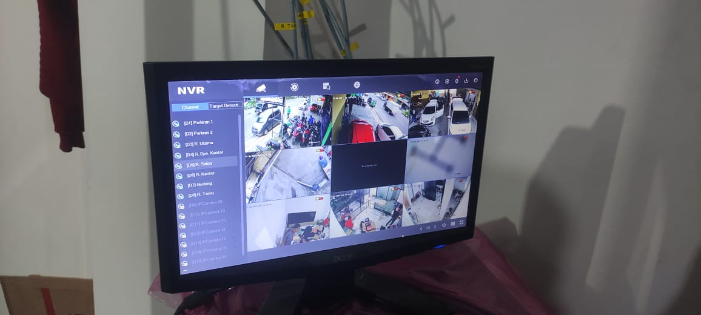
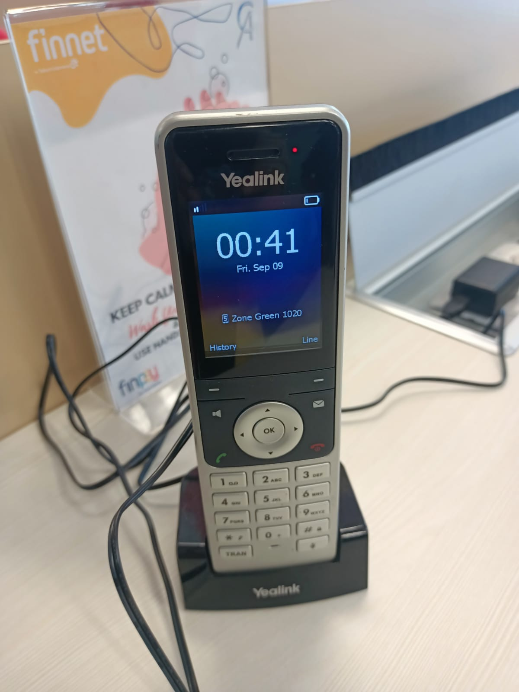

SKILL
Skill yang mendukung kemampuan saya di bidang IT.
Pengalaman
Pengalaman yang mendukung kemampuan saya di bidang IT.
IT Support
PT Nusantara Tridaya Inovasi- Troubleshooting jaringan internet dan perangkat jaringan untuk mendukung operasional pengguna.
- Membantu instalasi dan konfigurasi perangkat jaringan seperti router, access point, dan switch.
- Instalasi CCTV dan konfigurasi IP Phone.
- Maintenance perangkat jaringan dan support teknis.
- Melakukan konfigurasi Mikrotik menggunakan Winbox.
Shopeefood Driver (Part-Time)
📅 Maret 2024 – Sekarang- Mengelola waktu antara pekerjaan dan perkuliahan secara efektif.
- Memberikan pelayanan yang baik kepada pelanggan.
- Terbiasa bekerja secara mandiri dan bertanggung jawab.
- Kemampuan untuk menangani keluhan atau masalah dengan tenang dan profesional
Dokumentasi
Beberapa dokumentasi kegiatan dan pengalaman di bidang IT.

Penataan dan Konfigurasi Perangkat Jaringan
Melakukan penataan kabel jaringan, pemasangan perangkat pada rack server, serta pengecekan konektivitas untuk memastikan jaringan berfungsi dengan baik.

Konfigurasi IP-Phone
Melakukan konfigurasi, pengecekan, dan troubleshooting perangkat IP Phone untuk mendukung komunikasi internal.

Crimping Kabel LAN
Melakukan crimping kabel UTP menggunakan konektor RJ-45 serta pengujian konektivitas untuk memastikan kabel jaringan berfungsi dengan baik.

Instalasi CCTV
Melakukan pemasangan perangkat CCTV serta penyesuaian posisi kamera untuk memperoleh area pemantauan yang optimal.

Monitoring CCTV
Melakukan pengecekan tampilan kamera CCTV melalui Network Video Recorder (NVR) untuk memastikan seluruh kamera berfungsi dengan baik.

Konfigurasi Telepon IP Yealink
Melakukan konfigurasi, registrasi, dan pengujian perangkat Telepon IP Yealink untuk memastikan komunikasi internal dapat berjalan dengan baik.